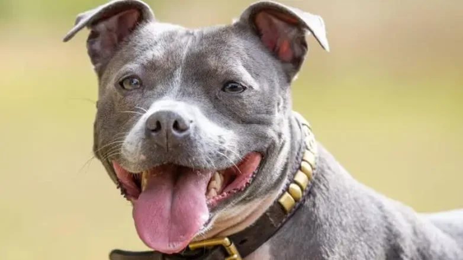

Staffordshire Bull Terrier
Personalidad
Con la gente, un staffordshire bull terrier bien criado y sociabilizado tendrá un carácter impecable y será especialmente afable, aunque algo ruidoso. No encontrarás un compañero más fiel y cariñoso. Sin embargo, con otros perros u otros animales, puede ser bastante menos cordial, si bien gran parte de eso depende de su adiestramiento y sociabilización a una edad temprana. Algunos staffordshire bull terriers conviven perfectamente con otros perros y gatos; otros no pueden ni pasear sin correa por si se encuentran con otro perro. La socialización temprana y continua, pues, es imprescindible.
Origen
Los orígenes de esta raza se remontan al siglo XIX, cuando se prohibieron los espectáculos de hostigamiento a toros y osos. Se inventaron entonces un nuevo «deporte»: el de las peleas de perros. De este modo, se cruzaron bulldogs y terriers para crear el bull terrier, del que desciende el staffordshire bull terrier.